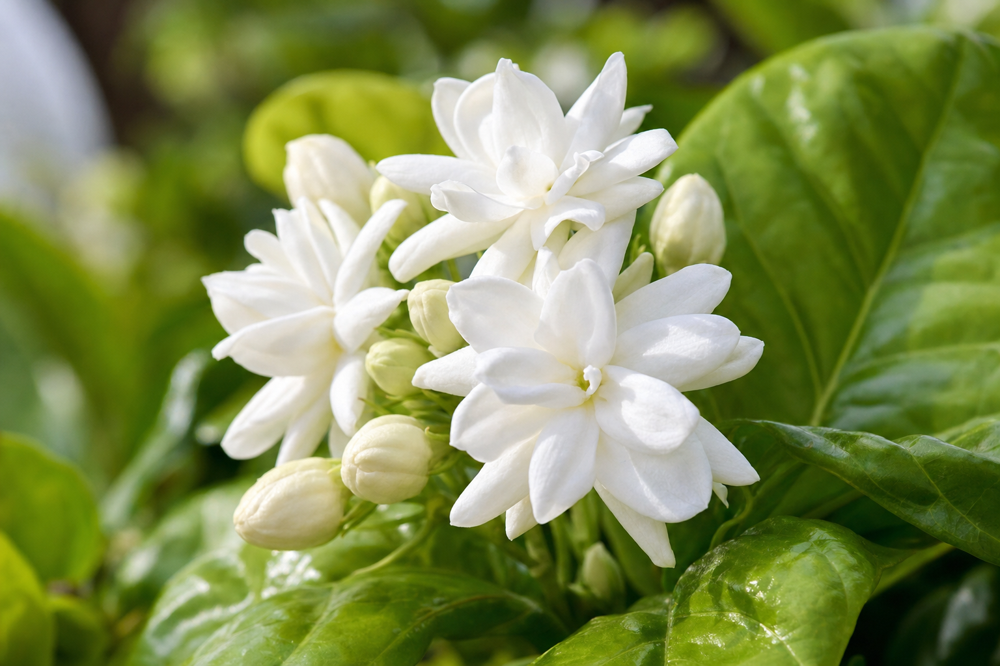

There is no flower more deeply woven into Hawaiian culture and romance than the pikake. Its name, its fragrance, its appearance in poetry, music, and wedding ceremonies — pikake is the soul of Pikake Floral Studio, and today we want to share everything we know and love about this extraordinary bloom.
What Is Pikake?
Pikake is the Hawaiian name for Jasminum sambac, also known as Arabian jasmine. Despite its name suggesting Arabian origins, the plant has been cultivated throughout tropical Asia and the Pacific for thousands of years. In Hawaii, it was introduced in the 19th century and quickly became one of the most beloved plants on the islands.
The Name's Fascinating Origin
The word "pikake" is the Hawaiian pronunciation of "peacock." The story goes that Princess Kaiulani, the last crown princess of the Kingdom of Hawaii (1875–1899), kept both peacocks and jasmine plants in the garden of her Ainahau estate in Waikiki. She loved the jasmine so much that she called it pikake after her beloved peacocks, and the name stuck throughout the islands forever after.
The Fragrance
If you've ever walked past a pikake plant in bloom — particularly in the early morning or evening when the scent is strongest — you'll understand why it's so revered. The fragrance is intensely sweet, with jasmine's characteristic warmth and a distinctly tropical richness. It's used in some of the world's most famous perfumes (most notably Chanel No. 5) and in Hawaiian music as a symbol of beauty and romance.
Growing Pikake in Hawaii
Pikake thrives in Hawaii's warm, humid climate. It prefers full sun to partial shade, well-draining soil, and moderate water. The plant blooms most prolifically in summer and fall. Here at Pikake Floral, we source our blossoms from a family farm in the hills above Kailua, where the cool Koolau winds keep the plants healthy and the blooms fragrant.
Pikake in Ceremony and Culture
Pikake is the quintessential lei flower for Hawaiian weddings, graduations, and milestone celebrations. The traditional pikake lei is strung needle-style (kui), threading each tiny blossom onto a long string to create a necklace of pure white pearls of fragrance. A full pikake lei of 36 inches uses approximately 500 individual blossoms — it's truly labor intensive, which is why pikake leis are considered among the most precious gifts one can give.